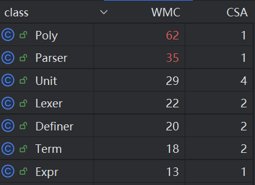
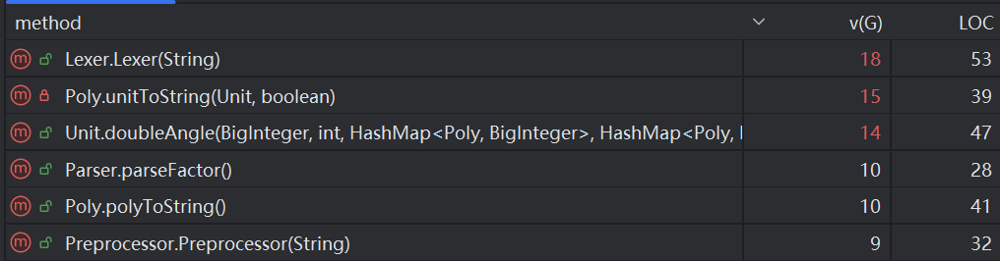
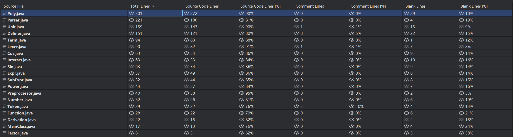
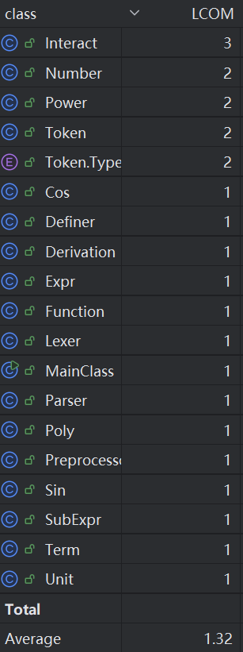
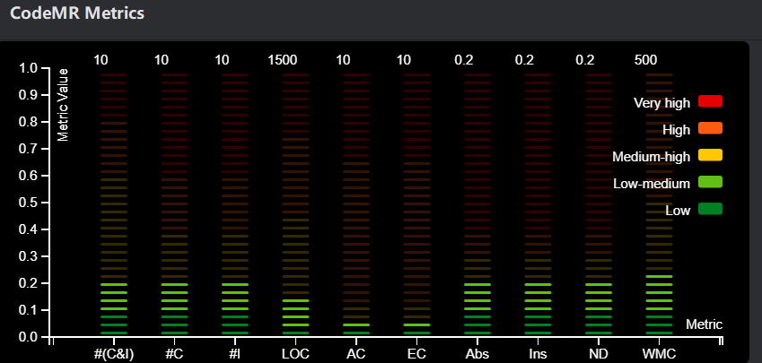
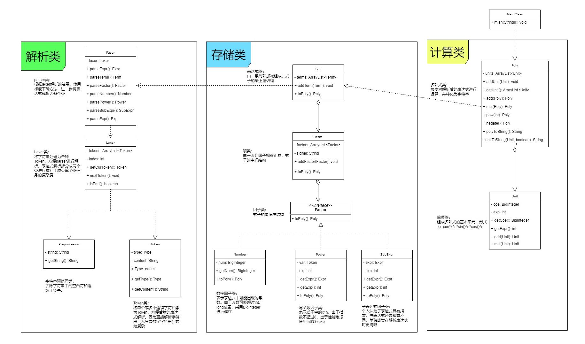
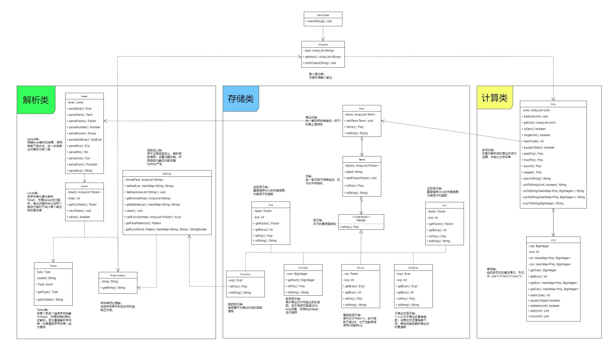
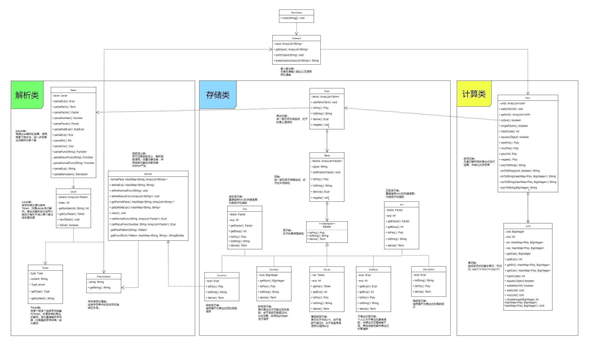
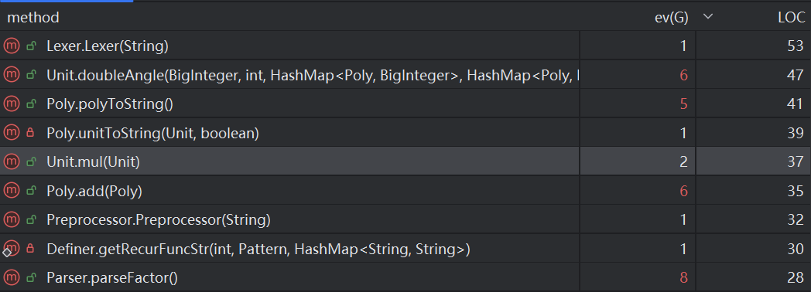

OO Unit1
程序结构
OO度量分析
由于类和方法数量较多，主要展示并分析比较复杂的类和方法
类复杂度分析

指标解释：
| 名称 | 含义 |
|---|---|
| CSA | 类属性个数 |
| WMC | 类的加权方法复杂度 |
可以看出Poly类和Parser类的方法复杂度很高，尤其是Poly类。
对于Parser类，主要是因为要解析各种因子，导致方法数量飙升，共计13个方法。
对于Poly类，主要是因为同时承担了计算表达式和将表达式转化为字符串的功能，导致方法数量和方法复杂度飙升。其中方法数量达到15个，且add()、polyToString()、unitToString()等方法较复杂（现在分析看来我应该把unitToString()放在Unit类中实现）
方法复杂度分析

指标解释：
| 名称 | 含义 |
|---|---|
| LOC | 方法行数（规模） |
| v(G) | 方法的独立路径的条数 |
- Lexer()用于解析输入，因为对不同的字符需要用不同的分支判断，所以复杂度较高。从v(G)（独立路径条数）的数据也可以看出这一点
- unitToStirng()和PolyToString()前面已经分析过
- parseFactor()中需要根据不同的因子类型做分支判断，独立路径较多
- doubleAngle()方法用于化简二倍角，该方法的复杂度源于化简算法本身较高的复杂度
- Preprocessor()用于去除空白符、合并连续的正负号。合并正负号需要对各种情况进行分支判断，造成了较高的复杂度
代码行数分析

可以看出，行数最多、规模最大的类有Poly、Parser等，这与前面类的复杂度分析相吻合
类的内聚与耦合

指标解释：
| 名称 | 含义 |
|---|---|
| LCOM | 方法的内聚缺乏度。值越大，说明类内聚合度越小 |
大部分类的LCOM值为1，小部分大于1。说明代码内聚度有待提升，类内部方法协同不够紧密

分析指标中，AC(Access to Class)、ND(Number of Dependencies)等指标数值都较低，说明代码具有较低的耦合度
UML类图
第一单元作业最终架构的UML类图如下：

优点：
- 代码分为解析、存储、计算三大类别，各个类之间有比较清晰的依赖关系
- 通过Interact类处理输入输出，降低了MainClass的复杂度
- 各个因子实现Factor接口，层次较为清晰
缺点：
- 部分类较为复杂冗长（如Poly、Parser），递归较深，导致debug时难以定位错误
架构设计体验
hw1

hw1是迭代作业的开始，设计的重点在于建立解析和计算表达式的整体架构，为了以后顺利迭代，还需要保证可拓展性
预处理
目的：删除输入中的所有空白符，以及合并输入中的连续正负号
空白符：在循环过程中直接删除ascii码为32和9的字符
正负号：设置signal标志，初始值为1，仅当遇到负号时乘以-1，这样就可以合并连续的正负号。当然，需要一个hasSignal标志来标记当前正在处理正负号
由于BigInteger和Int均可以处理前导零，预处理过程中不需要针对前导零做处理
表达式解析
为了应对未来可能的嵌套括号和新因子，使用递归下降法解析表达式。首先通过Lexer将表达式解析为一系列Token，然后利用Parser进一步解析为Expr，Term，Factor三个层次
Token：类型包括NUM，VAR，ADD，SUB，MUL，EXP，LP，RP
Lexer：负责将表达式解析为Token，可以用一次遍历+switch/if的结构。其中NUM和EXP由于是数字，需要一个循环结构连续读取全部组成数字后转化为Token，其它类型均可直接读取
Parser：根据形式化描述，将解析出来的Token数组递归生成Expr，Term和Factor
Parser的实现可能需要一些思考，但抓住了形式化描述中三个层级之间的递归关系，就可拨云见日：
- Expr = Term +/- Term …
- Term = Factor * Factor …
- Factor = Number / Power / SubExpr
Expr由Term连接而成，故parseExpr内部应该多次调用parseTerm以生成Term，同理，parseTerm内部多次调用parseFactor以生成Term。
理清楚大体框架后，处理好符号、循环条件之类的细节，就可以完成Parser了
表达式合并化简
由于Expr，Term，Factor这几个不同类之间不方便运算，我设计了两个计算类Poly，Unit。其中Poly仅有成员变量units(储存Unit的数组) Unit则有成员变量coe(项系数)，exp(项次数)。这是因为最终结果中可能出现不同次数和系数的项，不可合并，而Poly应该能同时储存这些项。
合并化简是一个逐级进行的过程，Expr转Poly需要调用Term转Poly，Term转Poly需要调用Factor转Poly，
hw2

hw2新增了三角函数因子、自定义递归函数因子和嵌套括号。其中嵌套括号在hw1的递归下降法中已经顺便得到了处理
三角函数
思路：设置三角函数类Sin，Cos，实现Factor接口
1 | public class Sin implements Factor { |
新增三角函数后，Unit类的形式变为$a*x^b*\prod\limits_{i=1}^n sin_i()\prod\limits_{j=1}^n cos_j()$，Unit类中新增两个哈希表储存三角函数。同时重写hashCode和equals，从而在合并时可以方便地判断同类项
自定义递归函数
思路：新设置一个Definer类，用于储存函数定义，并通过展开函数因子，参与形成函数因子对象。定义函数时初始化Definer，调用defineFunc方法记录函数的三个定义式；解析到函数因子时创建Function类，在Function的构造函数中调用Definer的callFunc方法，返回函数因子展开后的表达式
Definer
1 | public class Definer { |
成员变量：
- ArrayList
formalPara 形参列表。 - HashMap<String, String> defineExpr 函数表达式和递推表达式
Function因子
1 | public class Function implements Factor { |
hw3

hw3要求增加自定义普通函数、求导算子
自定义普通函数
经过对原代码递推函数的分析，感觉在解析深层递推函数的时候不会因为使用了字符串替换而造成复杂度飙升，实际上代码在hw2的强侧互测中也没有出现TLE、MLE的问题，故没有重构。计划在原架构基础上增加自定义普通函数，更改如下：
1 | ArrayList<String> formalPara --> HashMap<String, ArrayList<String>> formalPara // 一个函数符号对应一组形参 |
1 | // 将defineFunc分为defNormalFunc和defRecurFunc，分别定义普通函数和递归函数 |
1 | // 将callFunc分为callNormalFunc和callRecurFunc，分别解析普通函数调用和递归函数调用 |
然后稍微对输入解析做一些修改，就可以兼容自定义普通函数了
求导算子
hw3的实现依赖原有的架构，使用递归的思路进行求导。下面先分析表达式结构中各个成分的求导方法以及返回类型，然后据此设计求导函数derive()
Expr
表达式求导结果即为各个项求导之和，即求导返回值为Expr类型
d(Expr) = d(Term1) + d(Term2) + ... + d(Termn)
Term
项的求导稍微复杂，稍微推导一下可以发现结果是一个表达式（本人较菜就不严谨推导了）
d(Term) = d(Factor1) * Factor2 * ... * Factorn + Factor1 * d(Factor2) * ... * Factorn + Factor1 * Factor2 * ... * d(Factorn)
Factor
不同的因子求导结果其实并不一样，但为了统一接口，我们可以将其都设计为返回一个项
其中有几个比较特殊的：
- 函数因子：我在hw2中的实现是函数因子对象中只有一个表达式类成员变量，储存函数因子展开后得到的表达式。对改表达式变量求导后只能得到一个表达式类对象，需要包装为子表达式，然后加入一个项中
- 求导因子：对求导因子的实现类似于函数因子，成员变量也是展开后的表达式。故而对求导因子的求导（相当于求一个高阶导数）也要包装一下
自此，各个部分的derive()都有了定义。但是由于对项求导的结果是表达式，会出现“表达式+表达式”的情况，所以我们需要新增一个方法以实现合并；同理，也需要新增一个“项*”项“的方法
自定迭代情景
假设下一次迭代要求新增以e为底的指数因子，形式为e < 因子>，下面分析如何在hw3的基础上进行迭代
解析方面
- 新增指数对应的Token和parse解析方法，以解析指数因子
存储方面
- 新增指数因子类，实现Factor接口
计算方面
- 多项式的基本单元更改为$a*x^b*e^{f(x)}*\prod\limits_{i=1}^n sin_i(g(x))\prod\limits_{j=1}^n cos_j(h(x))$
- 多项式的相乘和相加根据新增的指数因子做出修改，相乘时考虑指数因子的次数的相加，相加时将指数因子纳入同类项的判断
自己程序的bug
第一单元的作业中hw2出现了两处bug：输出三角函数时部分内嵌因子没有加上括号，输出格式错误；合并同类项时提出正弦函数因子的负号有错误。
内嵌因子括号错误
问题出在Poly类的方法singleUnit()上。这是一个很简单的方法，只有两三行，用于在输出过程中判断三角函数内嵌因子是否为表达式，如果是表达式，那么理应加上一层括号使其成为表达式因子。但是我在设计过程中考虑不周，想当然地认为最小运算单元$a*x^b*\prod\limits_{i=1}^n sin_i(g(x))\prod\limits_{j=1}^n cos_j(h(x))$是一个因子，但这其实是一个项。
事后发现这个bug可谓非常无语，一通分析后总结出几个原因：
- 阅读作业要求时不够细致或没有理清楚每个细节，最后出现理解上的错误
- 自己搭建的评测机只检查了结果的正确性，没有考虑输出格式的正确性
- 中测太弱了(bushi)
而这种问题的解决方法，最好还是在阅读作业要求的时候就细心一点，注意要求中的坑点。毕竟要让评测机判断输出格式的正确性难度比较大，还不如自己搓一些数据点测试，而且如果对题意理解有问题说不定评测机写出来也是错的……
提负号错误
这个bug倒是没在强测和互测中被测出来，而是在我测别人的代码时发现的。bug位于Unit的mul()方法中处理三角函数相乘的部分。简单来说，正弦函数是一个奇函数，如果想提出内嵌因子的负号，正弦函数前的系数应该变号。但是如果正弦函数有偶数次幂，那么整体就变成了偶函数，提出负号时系数不需要变号。问题就出在没有判断这个偶数次幂
bug出现原因：
- 首先还是算法分析出现了问题，没有注意到偶数次幂的情况
- 其次是测试不够充分，这个方法属于计算类，没有构建JUnit测试。刚好我在hw2写的评测机也有问题，导致错误样例没被检测出来……
这个mul()方法有约40行，虽然逻辑不复杂，但也确实有点臃肿。完全应该把三角函数合并的部分抽象出来，方便进行单元测试。
bug复杂度分析
第一个bug的方法太过简短，主要分析一下第二个bug

可以看到，出现Bug的方法mul()的圈复杂度并不算很高，说明该方法比较结构化。但是方法的行数比较多，这会导致对方法的检查比较困难。基于其结构化的特点，应该将mul()拆分成几个子方法，进一步降低方法的复杂度
发现别人bug的策略
三次作业中我采取的主要测试策略都是写评测机进行黑盒测试，hw3中也设计了一些递归较深的样例，试图爆TLE/MLE，基本没怎么研究被测程序的结构
- 黑盒测试：力大砖飞，前期花费一些力气写好评测机，之后不管是自查还是hack都很方便。只要生成数据没问题，还是能查到不少bug
- 深递归样例：主要针对优化较多或结构复杂的代码，前者是因为优化输出长度不可避免地会增加判断逻辑，导致代码性能下降；后者则是因为代码写得太复杂而性能很差。很可惜我构造的样例没能爆出TLE/MLE，感觉是自己功力不足
代码优化
hw1
第一次作业的优化主要是输出格式，包括：
- 第一项是正项时省略正号
- 指数是1时省略
- 指数是0时化为1
- 系数是正负1时在部分场景下省略
- 系数是0时直接输出0
这些优化主要是在输出阶段增加判断逻辑，各个部分做好抽象就不会太复杂
hw2
第二次作业针对三角函数做了一些优化，包括：
- 含sin(0)的项输出0，cos(0)化简为1
- 三角函数指数为1时省略
- 三角函数指数为0时化为1
- 提三角函数内部的负号以进一步合并
其中复杂度稍微高一些的就是第四点，可以将三角函数的合并抽象为单独的方法，降低原方法的复杂度，同时方便单元测试
hw3
第三次作业做了一点二倍角优化，即2sin(x)cos(x)=sin(2x)。优化过程需要遍历哈希表中的三角函数，比较复杂。我将这部分抽象为一个方法，单独进行单元测试，保证了正确性
心得体会
- 面向对象作业中第一次作业的架构设计有着至关重要的作用，直接影响后续迭代的工作量。另一个角度想，如果前期的架构不合适，应该尽快重构
- 每次作业设计迭代方案时必须把优化考虑在内，而不是把优化当作一个“有机会再做”的部分，不然着手优化时会困难重重
- 认真写评测机并做好测试，不然互测时各种难受（
未来方向
总的来说感觉挺好，可以考虑平衡一下第二次作业和第三次作业的难度，感觉今年这两次难度差距有点大。
祝OO愉快！